Biblioteca com 40 componentes gráficos extraídos e convertidos para WEBP.
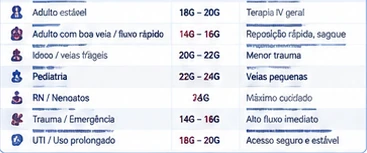
Tabela de Indicações de Cateteres
Imagem de uma tabela com indicações de diferentes calibres de cateteres intravenosos para diferentes tipos de pacientes e situações clínicas, com ícones ilustrativos ao lado de cada indicação.
Categoria: imagem. Tipo: imagem.
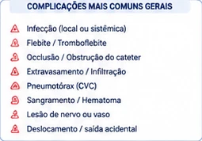
ícone de alerta
Conjunto de ícones de alerta em vermelho ao lado de cada item da lista, indicando situações de atenção ou risco.
Categoria: icone. Tipo: icone.
Enfermeira Ilustrada
Ilustração de uma profissional de saúde (enfermeira) de braços cruzados, vestindo uniforme clínico, cabelo preso e com estetoscópio no pescoço.
Categoria: imagem. Tipo: desenho.
ícone de escudo com check e ícone de mão com coração
Contém um ícone de escudo com um check dentro e um ícone de uma mão aberta segurando um coração.
Categoria: icone. Tipo: icone.
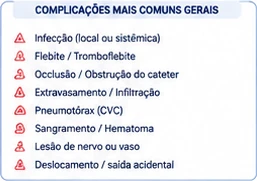
Lista de complicações com ícones de alerta
Imagem contendo uma lista de complicações médicas mais comuns acompanhado de ícones gráficos de alerta ao lado de cada item listado. O layout é retangular com cantos arredondados e apresenta uma borda azul clara.
Categoria: imagem. Tipo: imagem.
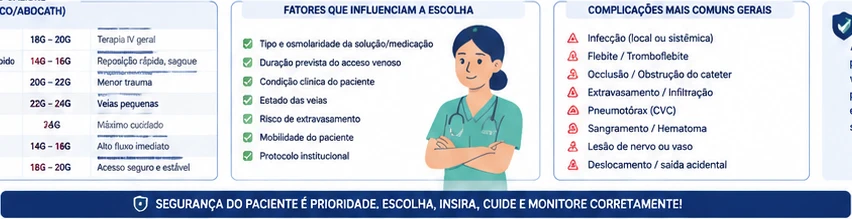
Ilustração de profissional de saúde
Ilustração central representando um profissional de saúde com jaleco e estetoscópio, sugerindo cuidado clínico e tomada de decisão médica.
Categoria: imagem. Tipo: desenho.
Ícones circulares médicos
Dois ícones circulares de estilo médico localizados ao lado de textos, cada um representando diferentes procedimentos ou dispositivos.
Categoria: icone. Tipo: grafico vetorial.
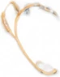
óculos
Fotografia de um par de óculos de armação fina e clara, vista de cima.
Categoria: fotografia. Tipo: fotografia.
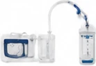
Aparelho médico com frasco e tubos
Fotografia de um equipamento médico composto por um aparelho, frascos transparentes e tubos conectores.
Categoria: fotografia. Tipo: fotografia.
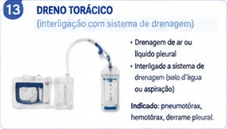
Dreno torácico
Imagem ilustrativa de um dreno torácico interligado a um sistema de drenagem médica.
Categoria: imagem. Tipo: imagem.
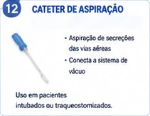
Fotografia de cateter de aspiração
Imagem fotográfica mostrando um cateter de aspiração, utilizado em procedimentos médicos para aspiração de secreções.
Categoria: fotografia. Tipo: fotografia.
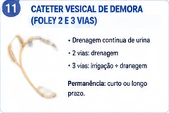
cateter vesical de demora
Fotografia de um cateter vesical de demora, dispositivo médico utilizado para drenagem urinária.
Categoria: fotografia. Tipo: fotografia.
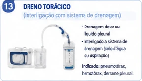
Sistema de drenagem torácica
Representação gráfica de um sistema de dreno torácico com frascos e tubos interligados, utilizado em procedimentos médicos para drenagem pleural.
Categoria: imagem. Tipo: imagem.
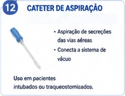
Imagem de um cateter de aspiração
Imagem ilustrativa de um cateter de aspiração médico em vista superior, com parte azul e parte transparente.
Categoria: imagem. Tipo: imagem.
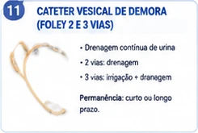
cateter vesical de demora
Imagem de um cateter vesical de demora utilizado para drenagem urinária.
Categoria: fotografia. Tipo: fotografia.
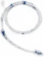
tubo médico
Fotografia de um tubo médico flexível, provavelmente utilizado para procedimentos hospitalares.
Categoria: fotografia. Tipo: fotografia.
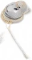
dispositivo médico
Fotografia de um dispositivo médico eletrônico, possivelmente um implante auditivo ou semelhante, exibido em vista superior.
Categoria: fotografia. Tipo: fotografia.
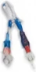
Cateter de acesso vascular
Fotografia de um cateter médico de acesso vascular com conexões azul e vermelha para utilização hospitalar.
Categoria: fotografia. Tipo: fotografia.
Cateter nasogástrico/nasoenteral
Fotografia de um cateter nasogástrico/nasoenteral disposto em um fundo branco.
Categoria: fotografia. Tipo: fotografia.
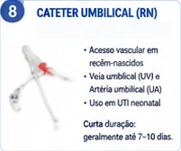
fotografia de cateter umbilical
Fotografia de um cateter umbilical utilizado em recém-nascidos para acesso vascular.
Categoria: fotografia. Tipo: fotografia.
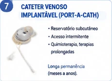
Cateter venoso implantável (Port-a-Cath)
Fotografia de um cateter venoso implantável, mostrando o reservatório subcutâneo e o tubo conectado.
Categoria: fotografia. Tipo: fotografia.
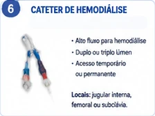
Fotografia de cateter de hemodiálise
Imagem fotográfica mostrando um cateter de hemodiálise, utilizado para acesso vascular em procedimentos de hemodiálise.
Categoria: fotografia. Tipo: fotografia.
cateter nasogástrico/nasoenteral
Fotografia de um cateter nasogástrico/nasoenteral enrolado em fundo branco.
Categoria: fotografia. Tipo: fotografia.
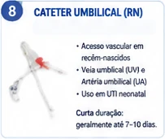
Fotografia de cateter umbilical
Imagem fotográfica de um cateter umbilical utilizado em procedimentos neonatais, apresentada para fins ilustrativos.
Categoria: fotografia. Tipo: fotografia.
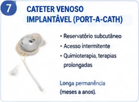
Cateter Venoso Implantável (Port-a-Cath)
Fotografia de um cateter venoso implantável (Port-a-Cath), mostrando o reservatório e o tubo conectado.
Categoria: fotografia. Tipo: fotografia.
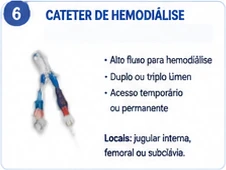
Fotografia de cateter de hemodiálise
Imagem fotográfica de um cateter utilizado para procedimentos de hemodiálise, apresentado à esquerda no componente gráfico.
Categoria: fotografia. Tipo: fotografia.
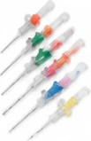
Cateteres intravenosos de diferentes cores
Fotografia de vários cateteres intravenosos organizados em fileira, cada um com uma cor diferente no suporte.
Categoria: fotografia. Tipo: fotografia.
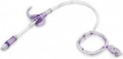
Tubo médico
Fotografia de um tubo médico, possivelmente um cateter ou sonda, com partes em cores translúcidas e roxas.
Categoria: fotografia. Tipo: fotografia.
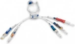
Cateter médico de múltiplos lumens
Fotografia de um cateter médico com múltiplos lumens e conexões coloridas, utilizado em procedimentos hospitalares.
Categoria: fotografia. Tipo: fotografia.
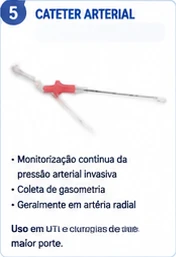
Fotografia de cateter arterial
Imagem fotográfica de um cateter arterial utilizado para monitorização invasiva e coletas de gasometria.
Categoria: fotografia. Tipo: fotografia.
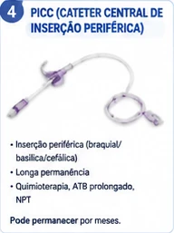
Fotografia de cateter PICC
Imagem mostrando um cateter central de inserção periférica (PICC) utilizado na área médica.
Categoria: fotografia. Tipo: fotografia.
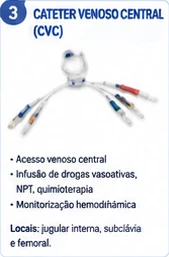
Fotografia de cateter venoso central
Fotografia de um cateter venoso central com múltiplas vias, utilizado em procedimentos médicos.
Categoria: fotografia. Tipo: fotografia.
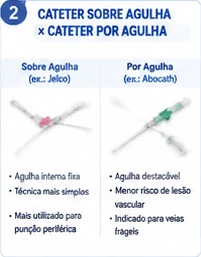
Comparação de cateter sobre agulha e cateter por agulha
Fotografias de dois tipos diferentes de cateteres utilizados em procedimentos médicos, um sendo cateter sobre agulha e outro cateter por agulha, para ilustrar visualmente as diferenças.
Categoria: fotografia. Tipo: fotografia.
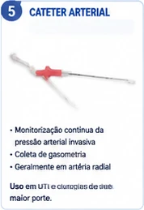
cateter arterial
Fotografia de um cateter arterial médico utilizado para monitorização invasiva da pressão arterial e coleta de gasometria.
Categoria: fotografia. Tipo: fotografia.
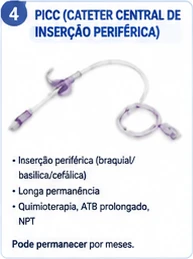
Fotografia de cateter PICC
Fotografia de um cateter central de inserção periférica (PICC), utilizado em procedimentos médicos para inserção intravenosa prolongada.
Categoria: fotografia. Tipo: fotografia.
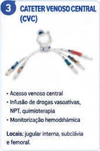
Fotografia de cateter venoso central (CVC)
Imagem fotográfica de um cateter venoso central (CVC) com múltiplas vias identificadas por cores.
Categoria: fotografia. Tipo: fotografia.
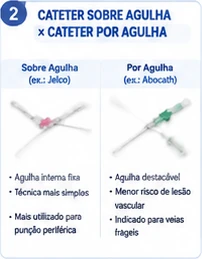
Fotografia de cateteres sobre agulha e por agulha
Imagem mostra dois cateteres diferentes, um sobre agulha e outro por agulha, utilizados em procedimentos médicos.
Categoria: fotografia. Tipo: fotografia.
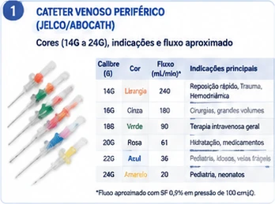
Fotografia de cateteres venosos periféricos
Imagem mostra diferentes cateteres venosos periféricos (Jelco/Abocath) organizados lado a lado, cada um com cores e tamanhos distintos representando diferentes calibres.
Categoria: fotografia. Tipo: fotografia.
ícone de informação
Um círculo azul com a letra 'i' minúscula branca ao centro, representando um ícone de informação.
Categoria: icone. Tipo: gráfico.
ícone de estetoscópio e calculadora
Ícone ilustrativo combinando um estetoscópio azul com uma calculadora, representando temas de cálculos médicos ou financeiros da saúde.